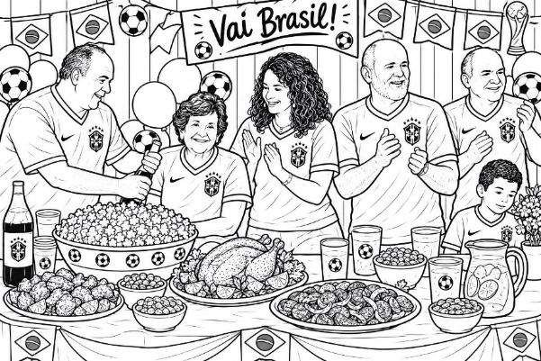

Dia de Jogo: Frango Frito a Passarinho e Linguiça Acebolada

Na época em que a Seleção Brasileira entrava em campo e o país inteiro se enchia de orgulho, a casa de Zelinda virava ponto de encontro para acompanhar os jogos da Copa do Mundo. A torcida se reunia, todos uniformizados com as camisetas confeccionadas especialmente pela “Verdadeira Camiseta RIB SILK”, feitas para a ocasião, prontos para vibrar a cada lance.
A sala ficava animada, os olhos acompanhavam a bola e, quando o Brasil fazia um gol, a comemoração tomava conta da casa. Era grito, alegria e aquela torcida que parecia empurrar a bola para dentro do gol. Por algumas horas, todo mundo tinha a mesma preocupação: ver o Brasil vencer.
E, como em toda boa reunião de família, não bastava torcer. Era preciso ter comida para acompanhar a partida e a cervejinha do Senhor José Arnaldo. O frango frito a passarinho e a linguiça acebolada entravam em
campo também. O frango, douradinho e crocante, e a linguiça com cebola eram daqueles petiscos que combinavam com a animação da torcida e faziam sucesso enquanto o jogo acontecia.
Entre um lance e outro, a família se servia, conversava e voltava os olhos para a televisão. Naqueles dias, a casa de Zelinda e Arnaldo ficava ainda mais viva, reunindo duas paixões que faziam parte da ocasião: o futebol e a família reunida.
E se o Brasil marcava um gol, a festa estava completa. A camiseta da torcida, os gritos pela Seleção e o cheiro dos petiscos faziam parte da mesma lembrança.
Hoje, o frango a passarinho e a linguiça acebolada podem trazer de volta um pouco daquela época: quando vestir a camisa do Brasil era motivo de orgulho e assistir à Copa na casa dos pais era também mais uma oportunidade de reunir todo mundo ao redor da mesa.